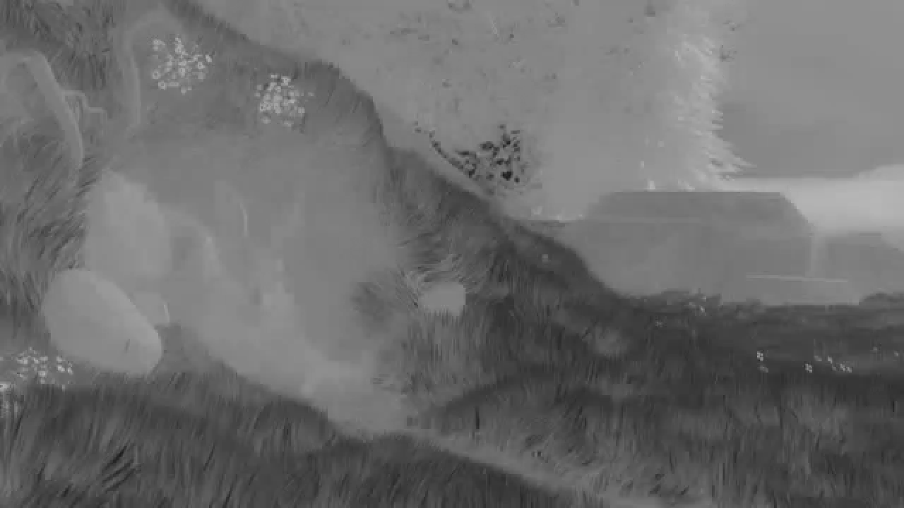

A typical use case for video research includes loading only the luma channel of a video. Often, researchers will convert a source from its arbitrary format to a YUV file, then only load the Y channel. Also, to test an algorithm, only the first N frames are needed. The next example shows how this can be done without generating YUV files
1import skvideo.io
2import skvideo.datasets
3import skvideo.utils
4
5filename = skvideo.datasets.bigbuckbunny()
6
7print("Loading only luminance channel")
8vid = skvideo.io.vread(filename, outputdict={"-pix_fmt": "gray"})[:, :, :, 0]
9print(vid.shape)
10print("Enforcing video shape")
11vid = skvideo.utils.vshape(vid)
12print(vid.shape)
13print("")
14
15print("Loading only first 5 luminance channel frames")
16vid = skvideo.io.vread(filename, num_frames=5, outputdict={"-pix_fmt": "gray"})[:, :, :, 0]
17print(vid.shape)
18print("Enforcing video shape")
19vid = skvideo.utils.vshape(vid)
20print(vid.shape)
21print("")
Running this produces the following
Loading only luminance channel
(132, 720, 1280)
Enforcing video shape
(132, 720, 1280, 1)
Loading only first 5 luminance channel frames
(5, 720, 1280)
Enforcing video shape
(5, 720, 1280, 1)
Given an input raw video format like yuv, one must specify the width, height, and format. By default, scikit-video assumes pix_fmt is yuvj444p, to provide consistent saving and loading of video content while also maintaining signal fidelity. Note that the current state of skvideo does not support direct loading of yuv420p (i.e. loading into rgb format still works, but you cannot access the yuv420 chroma channels directly yet. This is a data organization issue.)
1import skvideo.io
2import skvideo.utils
3import skvideo.datasets
4
5# since this skvideo does not support images yet
6import skimage.io
7import numpy as np
8
9filename = skvideo.datasets.bigbuckbunny()
10filename_yuv = "test.yuv"
11
12# first produce a yuv for demonstration
13vid = skvideo.io.vread(filename)
14T, M, N, C = vid.shape
15
16# produces a yuv file using -pix_fmt=yuvj444p
17skvideo.io.vwrite(filename_yuv, vid)
18
19# now to demonstrate YUV loading
20
21vid_luma = skvideo.io.vread(filename_yuv, height=M, width=N, outputdict={"-pix_fmt": "gray"})[:, :, :, 0]
22vid_luma = skvideo.utils.vshape(vid_luma)
23
24vid_rgb = skvideo.io.vread(filename_yuv, height=M, width=N)
25
26# now load the YUV "as is" with no conversion
27vid_yuv444 = skvideo.io.vread(filename_yuv, height=M, width=N, outputdict={"-pix_fmt": "yuvj444p"})
28
29# re-organize bytes, since FFmpeg outputs in planar mode
30vid_yuv444 = vid_yuv444.reshape((M * N * T * 3))
31vid_yuv444 = vid_yuv444.reshape((T, 3, M, N))
32vid_yuv444 = np.transpose(vid_yuv444, (0, 2, 3, 1))
33
34
35# visualize
36skvideo.io.vwrite("luma.mp4", vid_yuv444[:, :, :, 0])
37skvideo.io.vwrite("chroma1.mp4", vid_yuv444[:, :, :, 1])
38skvideo.io.vwrite("chroma2.mp4", vid_yuv444[:, :, :, 2])
39
40# write out the first frame of each video
41skimage.io.imsave("vid_luma_frame1.png", vid_luma[0])
42skimage.io.imsave("vid_rgb_frame1.png", vid_rgb[0])
43
44skimage.io.imsave("vid_chroma1.png", vid_yuv444[0, :, :, 1])
45skimage.io.imsave("vid_chroma2.png", vid_yuv444[0, :, :, 2])
Luminance video (luma.mp4)
Chroma channel 1 video (chroma1.mp4)
Chroma channel 2 video (chroma2.mp4)
Luminance frame (vid_luma_frame1.png)
RGB frame (vid_rgb_frame1.png)
Chroma channel 1 frame (vid_chroma1.png)

Chroma channel 2 frame (vid_chroma2.png)
Specifying FFmpeg parameters using the outputdict parameter allows for higher video quality. As you change the bitrate through the “-b” parameter, the video output approaches the fidelity of the original signal.
1import skvideo.measure
2import numpy as np
3import numpy as np
4
5import skvideo.measure
6
7outputfile = "test.mp4"
8outputdata = np.random.random(size=(30, 480, 640, 3)) * 255
9outputdata = outputdata.astype(np.uint8)
10
11# start the FFmpeg writing subprocess with following parameters
12writer = skvideo.io.FFmpegWriter(outputfile, outputdict={
13 '-vcodec': 'libx264', '-b': '300000000'
14})
15
16for i in range(30):
17 writer.writeFrame(outputdata[i])
18writer.close()
19
20inputdata = skvideo.io.vread(outputfile)
21
22# test each frame's SSIM score
23mSSIM = 0
24for i in range(30):
25 mSSIM += skvideo.measure.ssim(np.mean(inputdata[i], axis=2), np.mean(outputdata[i], axis=2))
26
27mSSIM /= 30.0
28print(mSSIM)